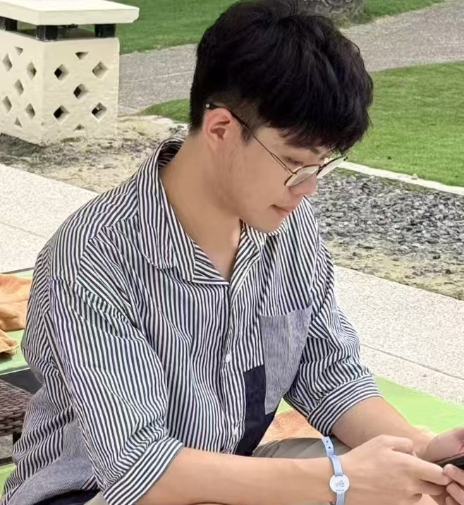

NeurIPS
2025
2025
First-Year PhD · NExT++ Lab, National University of Singapore
Building trustworthy, aligned and safe large vision-language models.
I am a first-year PhD student at the NExT++ Research Centre, School of Computing, NUS, advised by Prof. Chua Tat-Seng, working closely with Dr. Fei Shen.
Before starting my PhD, I interned at NExT++ with Dr. An Zhang, and worked as a research intern with Prof. Huaxiu Yao at UNC. I received my B.Eng. (Honors) from UESTC, where I was advised by Prof. Yazhou Ren.
My research focuses on hallucination, safety, and RL-based alignment in vision-language models, with previous work on multi-view representation learning.

Autonomous LLM/VLM agents — tool use, reasoning, planning, and multi-agent collaboration.
Interpretability of large models: neuron-level mechanisms, cross-modal transfer, and internal representations.
Hallucination, jailbreak, safety alignment, and robustness of large foundation models.
Multi-view & multimodal representation learning — consistency, complementarity, and cross-architecture transfer.
* denotes equal contribution. Full list on Google Scholar.
NExT++ Lab, NUS · Jan 2026 – Present · Advisor: Prof. Chua Tat-Seng · with Dr. Fei Shen
Hallucination, safety, and RL-based alignment for large vision-language models.
NExT++ Lab, NUS · Aug 2024 – Aug 2025 · Host: Dr. An Zhang
Enhancing safety and alignment of VLLMs; outputs accepted to ICLR 2025 and NeurIPS 2025.
UNC MURGe-Lab · May 2023 – Jan 2024 · Host: Prof. Huaxiu Yao
Reduced object hallucination by 23% on MiniGPT-4 without sacrificing diversity; ICLR 2024 + NeurIPS 2023 Workshop.
UESTC · May 2022 – Sep 2023 · Advisor: Prof. Yazhou Ren
Consistency & complementarity in multimodal representation; three first-author papers (NeurIPS / IJCAI / AAAI).